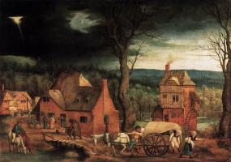
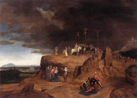

index
/
English
Cornelis Massijs
(1510 - 1556)
Return of the Prodigal Son
1538
Jesus’ parables

Arrival of the Holy Family in Bethlehem
1543
Scenes from the New Testament
Landscape with the Flight to Egypt
1545-50
Flight into Egypt
Landscape with Saint Jerome
1545
St Jerome
Four Blind Peasants
1550
Jesus’ parables

Crucifixion
Crucifixion
The Temptation of St Anthony
St Anthony
English
|
Русский
|
Українська